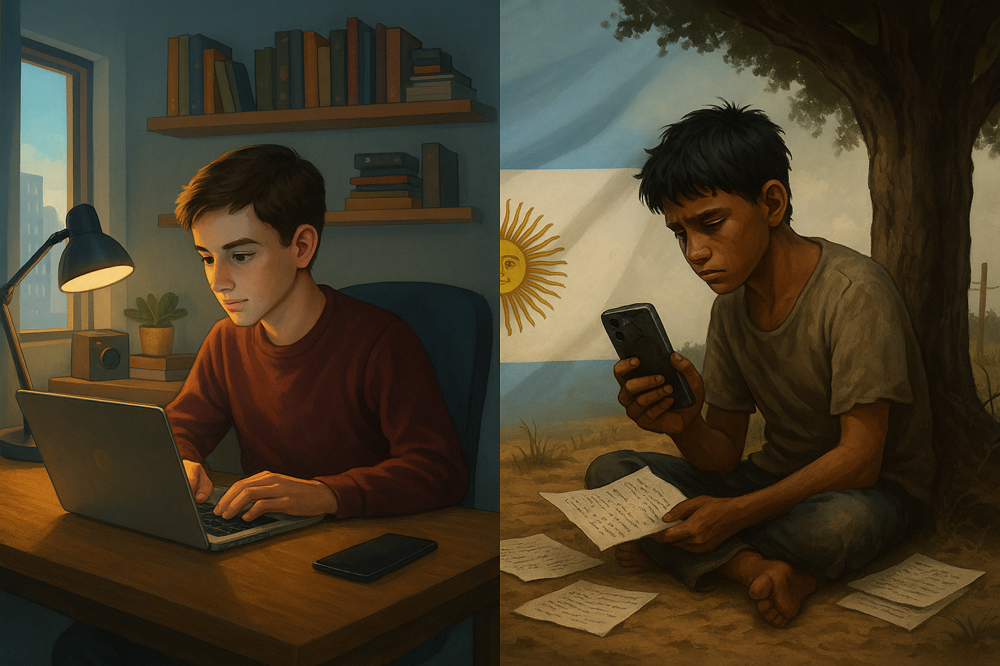

¡CONECTADOS A MEDIAS: La otra cara de la brecha digital en la escuela!
En un país donde más del 90 % de los adolescentes tiene un celular, podría parecer que el acceso a la educación digital está garantizado. Pero la realidad es muy distinta. En zonas rurales, hay estudiantes que deben caminar kilómetros para conseguir señal, mientras otros se conectan a clases por Zoom desde tres dispositivos distintos. ¿Estamos realmente brindando las mismas oportunidades?
La brecha digital en el sistema educativo argentino no se limita al número de computadoras disponibles ni a la
cobertura de Wi-Fi. Se trata de una problemática estructural, profundamente ligada al acceso desigual, al uso
pedagógico de las tecnologías, a la formación docente. A pesar de políticas públicas
como Conectar Igualdad o el plan Juana Manso, la desigualdad persiste y se profundiza especialmente en los sectores
rurales y más vulnerables.
Esta situación se agrava por la falta de inversión sostenida, la ausencia de formación específica para los docentes
y la escasez de políticas integrales que aborden el problema desde una perspectiva de derechos. Sin estos elementos
fundamentales, la digitalización escolar corre el riesgo de convertirse en una nueva forma de exclusión.
En la era de la hiperconectividad, una gran cantidad de estudiantes argentinos sigue sin poder acceder de forma continua
y significativa a internet. Según INDEC (2023), el 83 % de los hogares urbanos cuenta con conexión, mientras que en zonas
rurales ese número cae al 45 %. Esta desigualdad no solo es geográfica, sino también social: en los hogares con menores
ingresos, solo el 62 % tiene acceso, frente al 95 % de los hogares con mayores ingresos.
Esta brecha no solo implica dificultades concretas para estudiar, sino también una limitación real para participar en
el mundo actual, donde la información, el trabajo y el aprendizaje se desarrollan cada vez más en entornos digitales.
Sin embargo, el acceso no lo es todo. La Organización de Estados Iberoamericanos advierte que el uso escolar de las
TIC muchas veces se limita a prácticas básicas, como búsquedas en Google o presentaciones en PowerPoint. La Prueba
Aprender 2016 evidenció que más del 80 % de los estudiantes utiliza la tecnología para chatear o mirar videos,
pero menos de la mitad la emplea con fines escolares.
Esto demuestra la necesidad urgente de formar a los docentes y estudiantes en un uso crítico y pedagógico de
la tecnología, que fomente la producción de conocimiento y no solo el consumo pasivo de contenidos.
En ese sentido, el programa Conectar Igualdad, lanzado en 2010, representó una de las políticas más ambiciosas de
inclusión digital educativa en América Latina. Logró distribuir computadoras en todo el país y facilitar una
primera aproximación masiva a la alfabetización digital. Sin embargo, su discontinuidad en 2016 redujo
considerablemente su impacto. En 2021, el gobierno intentó recuperar la iniciativa bajo el nombre de Juana
Manso, sumando nuevos dispositivos y una plataforma digital.
Aunque representó un avance, su alcance fue limitado y no logró revertir la desigualdad acumulada.
En contraste, Uruguay, con su Plan Ceibal, garantizó conectividad en todas las escuelas, equipamiento
actualizado, contenidos digitales y formación docente continua. Su éxito radicó en la continuidad y el
enfoque integral de la política.
Todo esto nos lleva a una conclusión clara: la brecha digital no es solo una cuestión técnica, sino una cuestión de derechos. Sin conectividad, sin dispositivos adecuados, sin formación docente y sin contenidos pertinentes, hablar de educación digital es una ficción. Alfabetizar digitalmente hoy es tan urgente como enseñar a leer y escribir, y ese derecho solo puede garantizarse si se aborda con equidad territorial, social y de género. Si no se toman medidas urgentes y sostenidas, la tecnología, lejos de acortar distancias, podría convertirse en una nueva forma de exclusión.